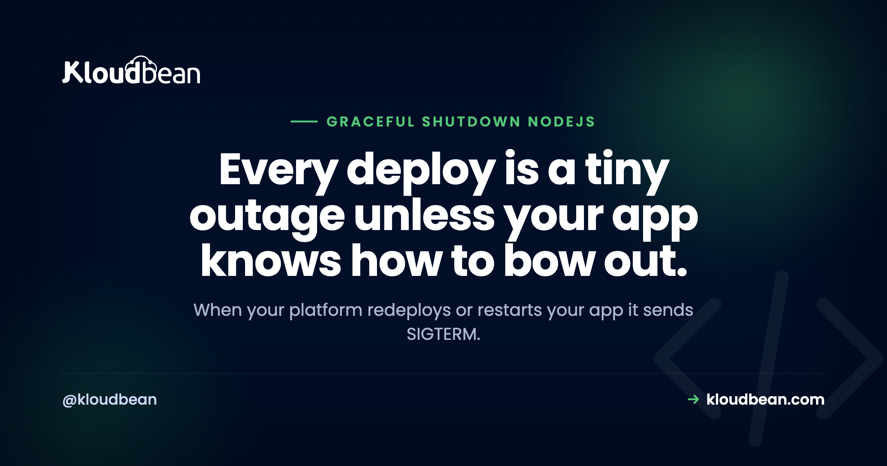

Graceful Shutdown in Node.js: Handling SIGTERM Without Dropping Requests

Here's a bug that hides in plain sight: every time you deploy, a few unlucky users get an error. Not because your new code is broken, but because your old process was killed mid-request. When a platform restarts, redeploys, or scales your app, it sends a SIGTERM and expects the process to wind down. If your Node app just exits on the spot, in-flight requests die and connections leak. Graceful shutdown is the small amount of code that turns a deploy from a blip into a non-event. Let's write it properly.
Listen for the SIGTERM signal your platform sends on restart or deploy. On receiving it, stop accepting new connections with server.close(), let in-flight requests finish, close your database pool and Redis, then process.exit(0). Add a timeout that force-exits if draining hangs, so a stuck connection can't block the shutdown forever. Handle SIGINT too for local Ctrl+C.
Why graceful shutdown matters
Think about what a deploy actually does: it starts a new version of your app and stops the old one. To stop the old one, the orchestrator (PM2, systemd, Kubernetes, your platform) sends SIGTERM and gives the process a grace window to exit. If your app ignores that and gets hard-killed a moment later, any request it was serving is cut off, the user sees a failed request or a 502, and half-finished work (an open transaction, a file being written) is left dangling. Multiply that by every deploy and every autoscale event and you've got a steady trickle of avoidable errors. Graceful shutdown closes that gap.
The signals: SIGTERM, SIGINT, SIGKILL
Three you should know. SIGTERM is the polite "please stop" that orchestrators send on deploy, restart, and scale-down, this is the one you must handle. SIGINT is what Ctrl+C sends in your terminal, worth handling so local dev behaves the same way. SIGKILL is the forced kill, and it cannot be caught or handled, which is exactly why you want to shut down cleanly during the SIGTERM grace window before a SIGKILL arrives. Your job is to finish and exit on SIGTERM so it never comes to that.
The graceful shutdown pattern
The shape is always the same: stop taking new work, finish current work, close resources, exit. Here it is for an HTTP server (Express or plain http):
const server = app.listen(process.env.PORT || 3000);
let shuttingDown = false;
async function shutdown(signal) {
if (shuttingDown) return; // ignore repeat signals
shuttingDown = true;
console.log(`${signal} received, shutting down gracefully`);
// 1) Stop accepting new connections, let in-flight requests finish
server.close(async () => {
try {
await pool.end(); // close the database pool
await redis.quit(); // close Redis
console.log("Clean shutdown complete");
process.exit(0);
} catch (err) {
console.error("Error during shutdown:", err);
process.exit(1);
}
});
// 2) Safety net: force exit if draining hangs
setTimeout(() => {
console.error("Forced shutdown after timeout");
process.exit(1);
}, 10000).unref();
}
process.on("SIGTERM", () => shutdown("SIGTERM"));
process.on("SIGINT", () => shutdown("SIGINT"));server.close() is the key call: it stops accepting new connections but lets existing requests complete, then fires its callback. That's your cue to close the database and Redis and exit.
Always add a timeout
Notice the setTimeout at the end. Without it, a single slow or stuck request (a hung upstream call, a client that won't disconnect) can keep server.close() from ever completing, and your process hangs until something hard-kills it, which is the outage you were trying to avoid. The timeout says "drain for up to 10 seconds, then leave anyway." Set it a little shorter than your platform's kill grace period so you exit on your terms. The .unref() keeps that timer from itself keeping the process alive.
Drain the load balancer first
There's a subtlety in front of the app. If a load balancer is still routing traffic to you while you drain, new requests can arrive after you've called server.close() and get refused. The clean sequence is to first mark yourself not-ready (flip your readiness health check to failing) so the load balancer stops sending new requests, wait a moment, then begin draining. That pairs directly with a proper health check, which is worth setting up alongside this. See Node.js health checks for the readiness side.
Common mistakes
- Not handling SIGTERM at all. The default is an immediate exit, so every deploy drops in-flight requests. This is the big one.
- Calling
process.exit()too early. Exiting beforeserver.close()'s callback cuts off the requests you meant to drain. - No timeout. A stuck connection makes shutdown hang forever.
- Forgetting resources. Leaving the DB pool or Redis open can delay exit or leave connections lingering on the server side.
- Long keep-alive. Idle keep-alive sockets can slow the drain; consider closing idle connections as part of shutdown.
| Signal | Where it comes from | Catchable? | What to do |
|---|---|---|---|
| SIGTERM | Deploy, restart, scale-down | Yes | Drain and exit cleanly |
| SIGINT | Ctrl+C in the terminal | Yes | Same graceful path |
| SIGKILL | Forced kill / timeout | No | Can't handle, avoid by exiting on SIGTERM first |
How this enables zero-downtime deploys
Graceful shutdown is the app-side half of zero-downtime deployments. The platform can start a new instance and stop the old one smoothly, but only if the old one drains instead of dying mid-request. On Kloudbean your Node app runs always-on under PM2, and a reload signals the process to stop, so an app that handles SIGTERM drains its in-flight requests during a deploy rather than dropping them. The platform provides the rolling mechanism; your shutdown handler is what makes it truly seamless. It's a genuine shared responsibility, and this handler is your side of it. The full picture is in zero-downtime deployments.

More on graceful Shutdown in Node.js
Shutdown pairs with a few neighbors. Set up the readiness signal in Node.js health checks, get the release mechanism in zero-downtime deployments, and run the process well with the PM2 process manager guide. Closing the pool cleanly connects to database connection pooling, and a mid-deploy blip often shows up as a 502 bad gateway.
Deploy without the error blip.
Run your Node app always-on under PM2 with GitHub deploys, so a shutdown handler that drains on SIGTERM turns every release into a non-event for your users. Flat pricing from $8/mo. Start at kloudbean.com.
Always-on under PM2 · Rolling reloads · GitHub deploys · Managed database · Flat from $8/mo
FAQ
What is graceful shutdown in Node.js?
It's the process of winding down cleanly when your app is told to stop: catch the SIGTERM signal, stop accepting new connections, let in-flight requests finish, close the database and other resources, then exit. It prevents the dropped requests and leaked connections that happen when a process is killed mid-work during a deploy or restart.
How do I handle SIGTERM in Node.js?
Register a handler with process.on("SIGTERM", ...) that calls server.close() to drain in-flight requests, then closes your database pool and Redis and calls process.exit(0). Add a setTimeout force-exit as a safety net so a stuck connection can't hang the shutdown. Handle SIGINT the same way for local Ctrl+C.
Why does my app drop requests during deploys?
Because it's being killed mid-request. The platform sends SIGTERM to stop the old instance, and if your app doesn't handle it and drain, the in-flight requests are cut off when the process is hard-killed. Adding a graceful shutdown handler lets those requests finish before the process exits.
Do I need a timeout in my shutdown handler?
Yes. Without one, a single slow or stuck request can prevent server.close() from completing, and the process hangs until it's force-killed, which defeats the purpose. A timeout (say 10 seconds, slightly under your platform's kill grace period) force-exits so you leave on your own terms.
What's the difference between SIGTERM and SIGKILL?
SIGTERM is a polite request to stop that your app can catch and respond to, which is what orchestrators send first. SIGKILL is a forced termination that cannot be caught or handled. The whole point of handling SIGTERM well is to finish and exit during the grace window so a SIGKILL never becomes necessary.
How does graceful shutdown relate to zero-downtime deploys?
It's the application side of it. The platform can roll a new version in and take the old one out smoothly, but the old instance still needs to drain rather than die mid-request. Your SIGTERM handler is what makes that drain happen, so the two together produce a deploy that users don't notice.